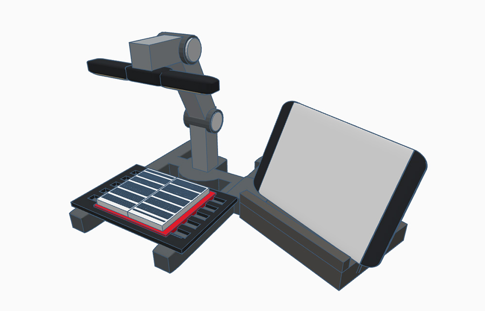

When children transition from reading picture books to novels, their engagement and interest often declines, leading to life-long reading deficiencies. According to Deloitte, over 1 million Canadian children are estimated to have reading skills below their grade level. Every child deserves to live a rich and fulfilling life that comes with the ability to read. We need to make it easier for everyone to read effectively and discover the joy of reading.
To make the transition to unillustrated chapter books less daunting, BookBuddy scans text of a chapter book and uses artificial intelligence to generate a visual image to assist the reader with comprehension and retention. Additionally, the reading aid uses AI to generate a multiple choice question to assess the reader’s comprehension. This will make it easier for early readers to develop their passion for reading along with their confidence and proficiency.
We used Tinkercad CAD software to create a 3D model of our prototype. This representation helps people to better understand our invention by viewing the BookBuddy from different angles, providing a clearer demonstration of its design.

We performed a patent search as well as an Internet search to look for the same or similar inventions. We found an e-book reader that can generate comprehension questions and other interactive content. Websites like Rewordify require users to copy and paste text for it to generate an easier-to-understand summary of the text. Other websites like BookBildr are targeted towards authors to help illustrate their work using a manual process. We found nothing with the seamless user experience of naturally reading your book, physical or digital, with the full augmented reading experience of automatic illustration as well as automated reading comprehension questions.